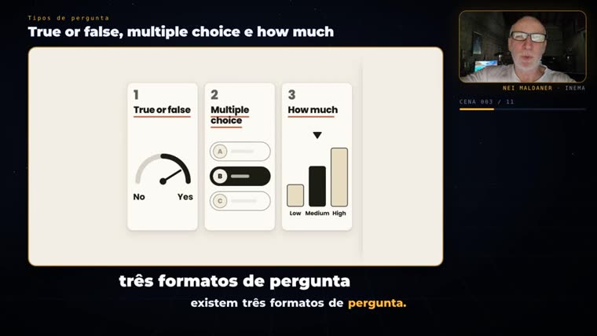
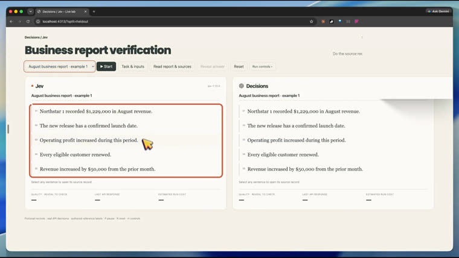

Dices el tema y pasas el enlace de un video. El agente reescribe el guion en portugués, usa las pantallas reales de la referencia, graba con tu avatar y tu voz y lo entrega listo para Telegram o YouTube.
refazvideo es un paso a paso, con herramientas listas, para que un agente de IA (Claude Code o Codex) rehaga un video que te pareció bueno como un video explicativo tuyo, en portugués. Sirve para quien produce contenido y quiere explicar un tema nuevo sin grabarse a sí mismo. Entregas el tema y el enlace; el agente descarga, transcribe, escribe un guion nuevo, muestra una vista previa y solo genera el avatar después de tu "adelante". Para usarlo necesitas el motor explicavideos, una cuenta de HeyGen con tu avatar y una máquina con GPU.
El video nuevo tiene un guion reescrito y tu rostro. De la referencia quedan solo las pantallas que ayudan a entender.
El habla se genera en HeyGen con tu avatar, desde el estudio (sin API), y solo después de tu aprobación, porque cuesta créditos.
Diapositivas, demos y tablas se vuelven capturas con resaltados sincronizados con el habla. Los términos técnicos quedan en inglés.
El habla no menciona a quien hizo la referencia y su webcam se borra de cada captura. Si quieres, el crédito aparece escrito al final.
Doce pasos descritos en el AGENTS.md (en portugués). El agente se detiene dos veces para que apruebes: en el storyboard y antes de HeyGen.
Las rutas de los ejemplos son las de la máquina de INEMA (/home/nmaldaner/...); cámbialas por las tuyas.
El motor que sincroniza avatar y habla (v1) y arma el visual con HyperFrames (v2).
git clone https://github.com/inematds/explicavideos
Descarga la referencia y transcribe con Whisper large-v3 local.
python3 baixar_v1.py --url "<URL>" --outdir src
Cuenta con avatar propio, con sesión iniciada en un perfil de navegador. El heygen-studio.mjs usa el estudio, no la API.
# Xvfb :99 para el navegador Xvfb :99 -screen 0 1920x1080x24
Python con Pillow para preparar las capturas; Node para el estudio de HeyGen y el envío por el bot.
pip install pillowEl Whisper del render v1 corre en la GPU. Si falta memoria, basta con limpiar el bloque y repetir.
nvidia-smiBot de Telegram (openpcbotv3) para enviar el video y yt-pubx para publicarlo en YouTube.
./yt-pubx canaisSolo necesitas el paso 1 y las dos aprobaciones. El resto lo hace el agente siguiendo el AGENTS.md; los comandos de abajo son los que él ejecuta.
Puedes escribir directo en el chat o completar modelos/pedido.md (en portugués: tema, referencia, a quién no mencionar, crédito, duración, entrega).
cd refazvideo && claude "Haz un video nuevo. Tema: <tema>. Referencia: <URL>. No mencionar: <autor>. Entrega: bot v3."
La referencia va a ~/projetos/output/explica-<id>/. Las hojas muestran un cuadro cada 6 s, numerado, para elegir las pantallas útiles.
python3 ~/projetos/inemavox/baixar_v1.py --url "<URL>" --outdir $OUT/src --quality 1080p python3 ~/projetos/inemavox/transcrever_v1.py --in $OUT/src/video.mp4 --outdir $OUT/src --whisper-model large-v3 ferramentas/extrair_frames.sh $OUT # → frames/sheet*.jpg
La webcam cambia de lugar a lo largo del video: cada captura tiene su propia caja. El modo linha continúa el fondo de la pantalla en lugar de dejar una mancha.
ffmpeg -ss 453 -i $OUT/src/video.mp4 -frames:v 1 $OUT/media/raw-453.png ferramentas/preparar_print.py raw-453.png s-453.png --cobrir 1516,52,377,362 # webcam en la esquina superior ferramentas/preparar_print.py raw-33.png p-33.png --crop 0,0,1250,1080 --pad # diapositiva estrecha → 2052×1080
El guion (roteiro/pt.json) se reescribe, no se traduce frase por frase, a ~150 palabras por minuto, y cierra con "inema ponto club". El storyboard muestra escena, habla y capturas para que lo apruebes.
ferramentas/montar_storyboard.py $OUT mapa.json # → preview/storyboard.html
Solo después de tu "adelante", registrado en v1/APROVADO_HEYGEN. Un envío por bloque; HeyGen puede quedarse un buen rato en 0% y luego termina en minutos.
DISPLAY=:99 node engine/heygen-studio.mjs --titulo EXPLICA-<ID>-PT-B01-v1 \ --fala-arquivo $OUT/v1/blocos/pt-b01.txt --template TEMPLATE-AVATAR16 ~/projetos/refazvideo/ferramentas/baixa_blocos.sh $OUT # espera hasta 2 h por bloque
El v1 sincroniza avatar y habla. El v2 coloca las capturas, resaltados y animaciones en el tiempo exacto del habla; el validador frena los errores que ya rompieron videos antes.
ferramentas/validar_visual.py $OUT/roteiro/pt.json $OUT/visual/pt-b*.json # → OK python3 engine/v2/build_block.py 1 --strict engine/v2/run_lane.sh 1 2 && python3 engine/assemble_languages.py # → v2/final/<id>-pt.mp4
Antes de entregar, una hoja de cuadros repartidos por el video: rostro ajeno, texto cortado, superposición. Después, Telegram (copia 720p, hasta 49 MB) y/o YouTube.
node ferramentas/enviar_bot_v3.mjs $OUT/v2/final/<id>-pt-720p.mp4 "subtítulo" ~/projetos/yt-pubx/yt-pubx publicar $OUT/v2/final/<id>-pt.mp4 --canal lives1 --dry-run
Referencia de 9m38s en inglés → explicativo de 5m42s en portugués, 11 escenas, 2 bloques de avatar. Todo lo que se ejecutó está en exemplos/decisions-jev/.


Lo que ya existe y lo que viene después.